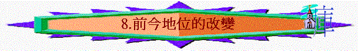

第八課 前今地位的改變
〔四：１－２０〕
本課要旨：本段經文主要分兩段，一段是承接上課繼續辯論人怎樣由律法下之奴僕成為承受產業兒子的地位。另一段則是保羅插入的勸勉和自白的說話。
１．請看下面〔四：１－２〕與〔四：３－４〕經文的比較。
| 經文 | 人物 | 以前 | 現今 | 至終 |
| 四：１－２ | 那承受產業的 | 為孩童的時候 | 在師傅和管家的手下 | 直等到他父親預定的時候來到 |
| 四：３－４ | 我們小學之下 | 受管於世俗 | 及至時候滿足，神就差遣祂的兒子... |
〔四：３〕說「我們也是如此」，可見〔四：１－２〕乃是用來比喻〔四：３－４〕的。
ａ．那承受產業的代表甚麼人﹖
ｂ．師傅又代表甚麼﹖
ｃ．時候滿足指甚麼﹖
２．甚麼是「世俗小學」﹖〔四：３〕（註一）
３．保羅為何描述主耶穌「為女子所生」、「且生在律法之下」﹖這與我們有何關係﹖〔四：４－５；創三：５；羅三：９－１０〕
４．當接受主耶穌時，我們得著了甚麼屬靈的事實﹖〔四：；６－７；羅八：９，１４－１６；弗一：１３－１４〕（註二）
ａ．
ｂ．
５．請將〔四：８〕與〔四：９〕一同比較，然後填寫下表的空格，再答問題：（註三）
| 四：８ | 從前 | 不認識神 | 給...不是神的 | 作奴僕 |
| 四：９ | 現在 | 1.
2. |
3. | 4. |
分享「認識神」與「被神所認識」之分別。〔四:９；參鴻一：７；約十：１４；十七：３；提後廿：１９；林前八：３〕
６．甚麼顯出加拉太人正走回律法之路﹖為何他們這樣作﹖結果如何﹖對我們又有何提醒﹖〔四：１０－１１；參西二：１６－２３〕
７．保羅勸加拉太人要「像」保羅那一方面﹖我們又能一樣的「像」他嗎﹖〔四：１２〕
８．保羅身患何疾﹖〔四：１３〕
９．從昔日加拉太人接待保羅的態度，我們可以效法到甚麼﹖〔四：１４－１５〕（註四）
ａ．
ｂ．
ｃ．
10．保羅怎樣勸勉加拉太人回轉呢﹖〔四：１６－２０〕
ａ．在態度上：
ｂ．在消極行動上：
ｃ．在積極行動上：
請分享你按真理勸勉人或被人勸勉的經歷。
11．假熱心與真熱心有何分別﹖我們需要在甚麼地方儆醒﹖〔四：１７－１８〕
12．保羅是男性，為何他會用「再受生產之苦」來形容他自己的心情呢﹖〔四：１９〕
13．基督為何還未成形在加拉太人的心裡﹖我們又如何﹖〔四１９－２０〕（註五）
第八課附註：
註一：1)「世俗」原文是單數。
2)「小學」意即各種學問的初步。
註二：1)「兒子名分」原文意思為「把兒子放在兒子的地位上」。
2)「呼叫」原文意思為「當眾出聲」。
註三：加拉太人本是外邦人，未信主前是服侍偶像的，是作奴僕，不認識神的，不像猶太人一直識神，有神的心意顯在他們當中，但如今神卻認識他們，揀選他們，使他們不再作奴僕。
註四：「福氣」原文「興旺」之意。
註五：1)「成形」原文不是指外表的改變，乃是指裡面真實的改變。
2)「口氣」原文是「聲調」、「聲音」之意。
參考答案
第八課：前今地位的改變
１．ａ．猶太人；ｂ．律法。
ｃ．指律法的時期滿足，而神所定的因信得救的時期現就顯明〔三：２５〕。
２．按照上下文來說，乃指猶太教或律法主義，因〔四：９－１０〕也提及「小學」而引述律法規條。另一方面也可解作世上那些華而不實的道理、哲理。
３．強調主就是應驗〔創三：５〕所提及「女人的後裔」那一位。因世人都是由男女結合而生，只有主單是由馬利亞而生。祂「生在律法之下」為要將那些受律法捆綁的選民救贖出來。可見連選民也需要救贖，何況我們按律法該受刑罰的罪，也被主救贖出來。
４．ａ．聖靈住在我心裡，得神生命，使我們能親近神，稱神為父。
ｂ．作神兒子，承受神的產業。〔四：７〕中的「兒子」有已長大成
人的意思，不與〔四：１〕的「孩童」（意嬰孩）相同。
５．1. 認識神；2. 被神所認識的；3. 歸向那無用的小學；4. 再給他作如僕。保羅延伸他的註解，「認識神」至「被神所認識的」是一種更深的境界．是雙方面的認識，不只是單方面而已。
６．從他們謹守猶太教的日子節期就顯明了他們走回律法之路。因為他們不明白律法之目的，又受律法主義者的攪擾。我們也不要以外表的行為、規條去取悅神，像他們一樣，結果是枉費工夫，徒勞無功。
７．勸他們要「像」保羅一樣無虧負加拉太人〔四：１２下〕。加拉太人以往也沒有虧負保羅，在他患病的時候，仍用愛心待他，即暗示如今他們的態度已有改變了。我們應像保羅一樣持續的無虧於加拉太人，學習他以謙柔的態度去服事、勸導別人；反過來說，我們亦應以愛心去對待那些愛我們、忠心為主勞苦作工的人。
８．聖經只有〔加四：１２－１６；林後十二：７〕提及保羅有疾，但無仔細交代。一般人解釋說他患有眼疾，因〔四：１５〕講及加拉太人願為他剜眼的事，可能與保羅的疾病有關；也有說他有瘧疾病，但這些解釋皆屬忖測而已。
９．ａ．沒有輕看保羅，〔四：１５〕他們甚至誇有保羅為福氣（新譯「歡樂」）。
ｂ．沒有厭棄保羅。
ｃ．接待他如同接待神的使者，態度熱切，甚至剜眼也願。
10．ａ．態度真誠，苦口婆心的勸。從「我小子阿」、「我巴不得」、「心裡作難」、「生產之苦」等字眼的表達可見他心情的沉重〔四：１９－２０〕。
ｂ．指出假弟兄之錯並質問責備加拉太人連好人歹人也不曉分辨〔四：１７〕。
ｃ．將真理告訴加拉太人〔四：１６〕。
11．假熱心只在人面前暫時熱心〔四１８〕，目的為要得人的榮耀，心裡卻不懷好意，要分裂教會。但真熱心卻是持久的，不是作給人看（甚至屬靈領袖），乃是單純作給神。
12．生產之苦是非常痛苦的事，每個母親都因著孩子誕生帶來的快樂，而甘願忍受生產之痛。保羅在建立加拉太的各教會時，也經歷像生產般的痛苦，因而這樣的形容。但現今他為著加拉太人的偏離，他仍情願為他們「再次」受此等的苦楚，是要叫他們明白真理。
13．加拉太人偏重律法，要活在律法之下〔四：２１〕，但關乎基督為律法所成就的，他們卻絲毫不明白，基督的地位顯然在他們的心中仍未確立，彷彿未成形一樣。很多信徒信主多年仍對真理弄不清楚，基督也是未成形在他們心裡，我們亦應以此作為提醒。